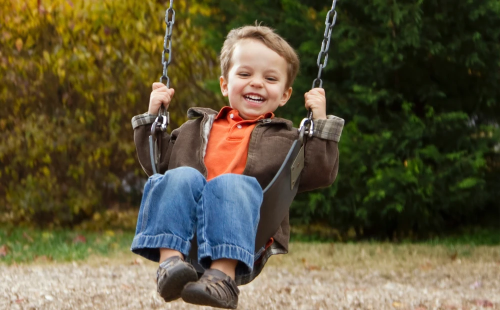
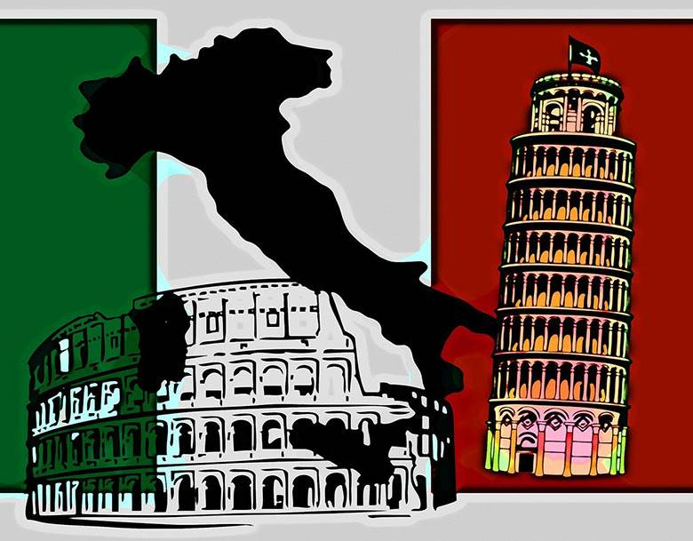

Дитинство Сашка
Сашкове дитинство було таке саме як у всіх в ті роки. Він був веселим, хорошим хлопчиком. Бавився з іншими дітьми, любив солодощі і ходити в садок.
Шкільні роки
У школі в молодших класах проблем ніких не було вчився добре, любив малювати і т.д. Після п'ятого класу почалися проблеми прогули, сигарети і таке-сяке.
Ліцей

В ліцеї получив професію телерадіо майстра, але не дуже знається на цьому ремеслі і це вже не актуально, бо вчилися на старих акваріумних телевізорах. Так і закінчилася його кар'єра не почавшись.
Робота
Перша робота у Сашка була грузщиком на базарі біля хати, було класно. Розвозив товар, розкладав палатки ніпрощо не думав, вітер в голові.
Друга робота була в офісі набирати накладні з товаром в програмі 1C, досихпір пам'ятаю ці офісні корпоративи, приємні спогади. Пізніше Сашкові захотілося поїхати в Польщу на заробітки, пропробувати як там воно всьо.
Польща, Італія
Спочатку Сашко поробив в Польщі на мясокомбінаті пару місяців а потім перебрався в Італію до родичів. Зробив документи і залишився.
На данний момент працює в компанії яка займається прибиранням і дезинфекціями в приватних і державних установах. Завжди цікавився комп'ютерами і хотілося би в майбутньому перестатити ходити по підвалам травити тараканів.